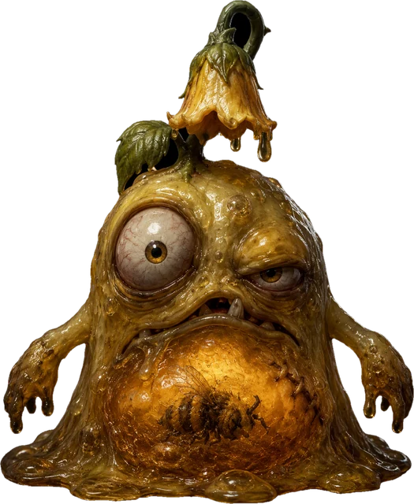
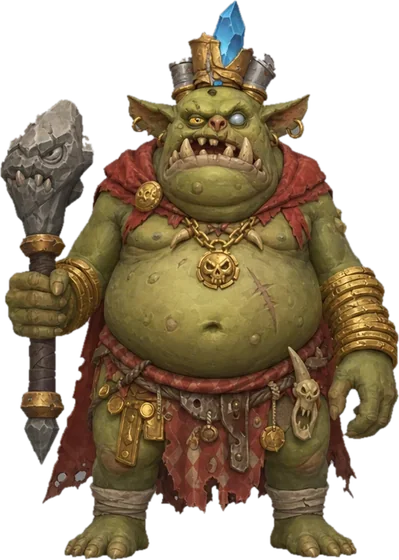
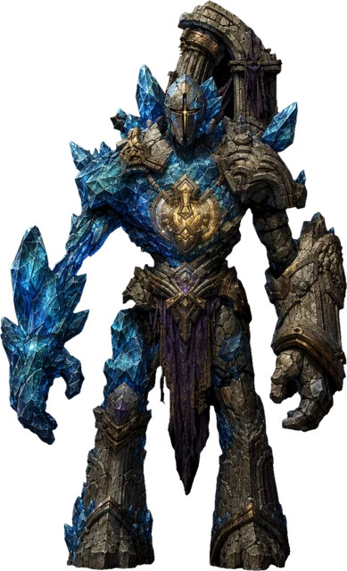
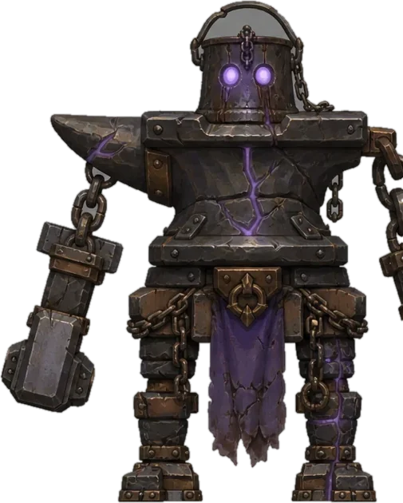

Goblin SaqueadorVale das Flores-Sino · Neutro
Arranca as flores-sino do vale para o rei dele. Sozinho corre; em bando cerca.

Bestiário
Uma amostra do que espera por você nos campos de Ermândia. O resto, você descobre caçando.
Criaturas
Arranca as flores-sino do vale para o rei dele. Sozinho corre; em bando cerca.

Mel que aprendeu a andar. Engole o que brilha, inclusive o seu ouro.

O chifre é cristal bravo. Ela não foge: toma distância.

Parece parte do chão até cuspir. Quem para perto, tosse por uma semana.

ChefeO rei dos goblins do vale. A coroa é de lata; o cristal nela, não.

As colmeias do Pouso eram mansas. Então o cristal brotou dentro da cera.

Arrepia as penas antes de bicar. É o único aviso que ela dá.

Uma vela que ninguém acendeu, andando entre os túmulos da hoste.

Rouba o que cai na água e cobra caro para devolver.

A casca criou rosto. Os carvoeiros juram que ela imita vozes.
 Chefe
ChefeO Urso-Carvoeiro dorme dentro do forno. Acorde-o por sua conta.
 Chefe
ChefeA Grã-Sapa Bulbosa enche o papo e o pântano inteiro prende a respiração.

ChefeCristalon, o Colosso Desperto. O que guardava a sede do reino ainda guarda.

Nasce onde o cristal encontra o fogo. Voa baixo, queima largo.

Uma bigorna que cansou de apanhar.

Caça em matilha e deixa brasa onde pisa.
Em produção
Cada região tem a sua fauna, o seu chefe e as suas cartas. As fichas entram aqui conforme os monstros entram no jogo.